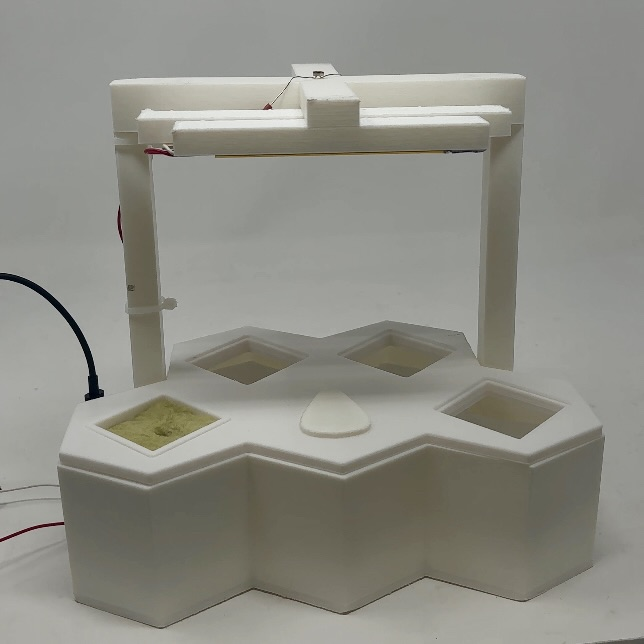
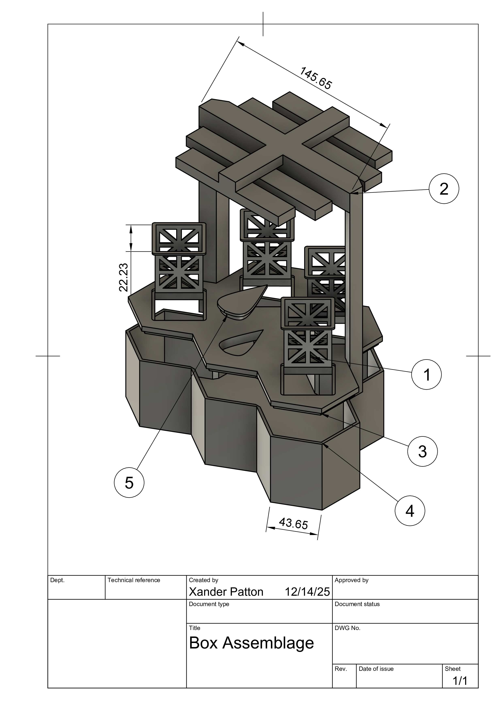
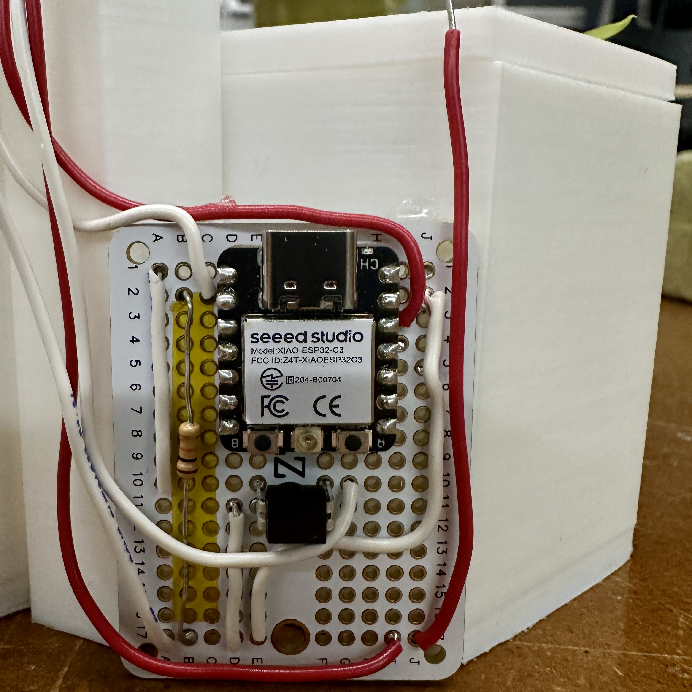
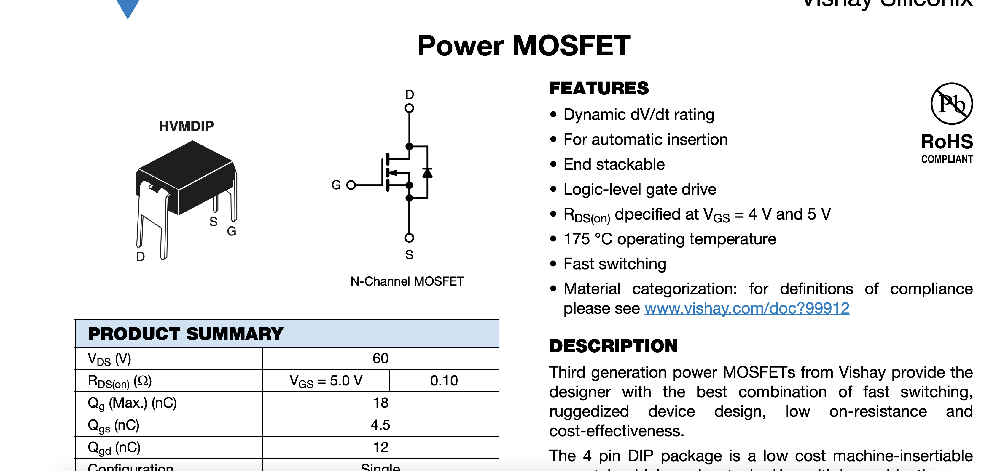

<div class="textcontainer">
<p class="margin"></p>
<h3>Final Project: Sun Sync</h3>
<p class="margin"> </p>
<p class="margin"> </p>
<iframe width="420" height="315"
src="https://www.youtube.com/embed/kaIxEVJgdsM">
</iframe>
<p class="margin"> </p>
<p> This hydroponic garden incorporates an automated grow light system to autonomize plant growth.</p>
<p class="margin"> </p>
<p></p>
<p class="margin"> </p>
<h3>Why hydroponics?</h3>
<p class="margin"> </p>
<p>
I chose to build a hydroponic garden because, despite my best efforts, I have an unfortunate track record of accidentally killing even the hardiest
houseplants. I wanted a system that could take some of the burden off the grower by actively responding to the plant’s real conditions rather than relying
on the typical timer-only systems that ignore whether a plant is actually getting enough ambient light. To keep the design simple and low maintenance,
I chose a Deep Water Culture (DWC) hydroponic setup, which suspends the roots directly in oxygenated nutrient solution, and paired it with rock wool for
stable moisture retention and easy germination. Many commercial garden systems still overexpose or underexpose their plants because the lights run on a fixed
schedule, not in response to need. By designing my own light array using high-intensity grow lights that require a 24V supply and integrating sensors that
determine when those lights should activate, I set out to create a garden that could compensate for both my busy schedule and my questionable horticultural abilities.
</p>
<h3>Hardware</h3>
<p class="margin"> </p>
<h4> 3D Prints</h4>
<p class="margin"> </p>
<p> The vast majority of the physical body components of this piece I modeled in fusion and then 3d printed. This created a uniformity in the aesthetics and design.
The 5 main 3d printed components were the base/water reservoir, the lid, the light array, the plant baskets, and the water slot cover. Here is an exploded view of the design.
</p>
<p class="margin"> </p>
<p></p>
<p class="margin"> </p>
<p> Here are those downloadable STL files.</p>
<p class="margin"> </p>
<a download href='./Body.stl'>Download my base/water reservoir stl </a>
<p class="margin"> </p>
<a download href='./Lid.stl'>Download my lid stl </a>
<p class="margin"> </p>
<a download href='./Light.stl'>Download my light array stl </a>
<p class="margin"> </p>
<a download href='./HydroCube.stl'>Download my plant basket stl </a>
<p class="margin"> </p>
<a download href='./Water Drop Cover.stl'>Download my water slot cover stl </a>
<p class="margin"> </p>
<h4>Electronics</h4>
<p class="margin"> </p>
<p>The circuit for this was relatively simple, with a photoresistor measuring the amount of ambient light (sunlight) that the garden structure was receiving,
running that information through a mosfet, and dimming or brightening the lights via rapidly switching the power on and off. Here is the cicuit on my PCB.
</p>
<p class="margin"> </p>
<p></p>
<p class="margin"> </p>
<p> And here is the soldered light array.</p>
<p class="margin"> </p>
<img width="640" height="640" src="Light Array.jpeg">
<p class="margin"> </p>
<h4>Other</h4>
<p> In addition to all of the above, in order to ensure that the structure of my garden would be waterproof, I utlized the CNC to create a mold that matches the
shape of my printed body piece and then vacuum formed that mold. The only update that I made to this was redoing the vacuum forming with a larger vacuum former
to create taller walls for the shape.</p>
<a class="nav-link" href=https://x-patton.github.io/XPATTON_PS70/08_cnc/index.html>View that process here.</a>
<br/>
<p class="margin"> </p>
<br/>
<h3>Software</h3>
<p> Upon getting my new (stronger) grow lights, and soldering together my new light array, I realized that I would have a problem powering these.
In order to get such strong lights, to power on, a 24v power source was needed. Testing them on the power supply, I found that the lights began to turn on
at 19.5v and reached their maximum brightness at about 25v. To prioritize safety, rather than wiring up an external laptop charger as my power supply,
I decided that I would use one of the adjustable power supplies in the classroom. With the voltage now being adjustable, I had to reconsider my circuit and code from
my MVP, landing on using a MOSFET. </p>
<p class="margin"> </p>
<p></p>
<p class="margin"> </p>
<p> To ensure that my MOSFET would work, here is a simple code using a delay structure. This successfully powered on my lights!</p>
<pre>
const int ledPin = D0;
void setup() {
pinMode(ledPin, OUTPUT);
ledcAttach(ledPin, 5000, 8);
}
void loop() {
for(int i = 0; i < 256; i ++){
ledcWrite(ledPin, i);
delay(10);
}
for(int i = 255; i >= 0; i--){
ledcWrite(ledPin, i);
delay(10);
}
}
</pre>
<p class="margin"> </p>
<p> Now I just had to apply the new logic of the mosfet to my old code that adjusted the lights brightness based on the ambient light it received. Here is what I
ended up with. All of the following programming was done with the Arduino IDE and a XIAO ESP32C3.
</p>
<p class="margin"> </p>
<a download href='./WorkingLightCode.ino'>Download my code!</a>
<p class="margin"> </p>
<pre>#include <Arduino.h>
#define MOSFET_PIN D0 // MOSFET
#define SENSOR_PIN D1 // photoresistor
const uint32_t PWM_FREQ = 5000;
const uint8_t PWM_RES_BITS = 8; // 8-bit resolution
const uint16_t PWM_MAX_DUTY = (1 << PWM_RES_BITS) - 1; // 255
const uint16_t MIN_BRIGHTNESS = 10;
const uint16_t MAX_BRIGHTNESS = PWM_MAX_DUTY;
const unsigned long UPDATE_INTERVAL = 200;
unsigned long lastUpdate = 0;
void setup() {
Serial.begin(115200);
pinMode(SENSOR_PIN, INPUT);
bool ok = ledcAttach(MOSFET_PIN, PWM_FREQ, PWM_RES_BITS);
if (!ok) {
Serial.println("LEDC attach FAILED on MOSFET_PIN!");
}
ledcWrite(MOSFET_PIN, MAX_BRIGHTNESS);
}
void loop() {
unsigned long currentTime = millis();
if (currentTime - lastUpdate >= UPDATE_INTERVAL) {
lastUpdate = currentTime;
int sensorValue = analogRead(SENSOR_PIN);
Serial.print("Light sensor: ");
Serial.println(sensorValue);
int brightness = map(sensorValue,
0, 4095,
MAX_BRIGHTNESS, MIN_BRIGHTNESS);
brightness = constrain(brightness, MIN_BRIGHTNESS, MAX_BRIGHTNESS);
ledcWrite(MOSFET_PIN, brightness);
}
}</pre>
</div>